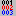
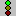
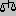
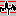

Как использовать AfonSoft Rename AllHow to use AfonSoft Rename All |
Back
|
New in version 9 |
|---|
|
В версии 9 используется другой алгоритм формирования списка файлов. Теперь помимо имени
и типа файла видно его время, дата и размер. По всем этим параметрам список можно сортировать.
Для этого достаточно нажать на верхнюю панель колонки. Колонка, по которой в настоящее время упорядочен
список файлов обозначается точкой. В функции замены появилась автоматиская функция замены букв русского алфавита на латинский. Этот режим работает только в русскоязычном интерфейсе. Помимо этого, появилась возможность изменения даты и времени файлов. Для этого во вкладках времени и даты есть специальный переключатель и поля для установки новых значений времени и даты. При сохранении параметров сохраняются только положение переключателей, значения даты и времени не сохраняются. Сортировка списка сохраняется. Просьба активно сообщать Ваши замечания и предложения по версии 9.Other algorithm of file list is used in versions 9. Aside from the name Now and type of the file you can see its time, date and size. On all this parameters a list possible to sort. For this sufficiently press on the upper panel of row. Row, on which at present ranked file list is marked by dot. Aside from this, has appeared a possibility of changing a date and time of files. For this there are a special switch and field for installing the new values of time and date in tabs for time and date . At the conservation of parameters are saved only position of switches, values of date and time are not saved. Sorting a list is not saved. Possibility of batch start (command line), unlike version 8, in versions 9 not worked. Please actively report Your remarks and offers on versions 9. |
Basic principles |
|
Основной принцип работы с программой заключается в том, что Вы, как из кубиков, составляете
новое имя для выбранных файлов. На главной панели есть 9 (версия 8) кнопок, со значками, которые
обозначают элементы нового имени - кубики. Над ними такое-же количество пронумерованных кнопок -
это шаблон (позиции) для нового имени. Что бы составить новое имя, нужно перетащить любой из элементов
на любую из позицию в шаблоне. После этого необходимо настроить каждый из элементов по Вашему усмотрению.
Главное отличие AfonSoft Rename All от других аналогичных программ, это использование различных объектов
нового имени паралельно и в любой комбинации. Ниже пошагово описан порядок использования программы.
Basic principle of using the program is concluded in that that You, as from puzzles, create new name for chosen files. On main panel you see 9 (version 8) buttons, with icons, whose are new name elements - boxes. On them such quantity of numberring buttons - a pattern (positions) for the new name. For creating a new name, you needed to drag over any one of elements on any one of the position in the pattern. Hereon it is necessary to adjust each of elements at your discretion. Main difference AfonSoft Rename All from other similar programs, is using the different objects of new name at same time and in any combinations. Below incremental described an order of using a program. |
Шаг 1. Выбор файлов. Step 1. File selection. |
|
Опустим описание процесса выбора диска и каталога. Эти процедуры стандартны во всем Windows. Остановимся на выборе файлов.
Выбор файлов производится в любом порядке. Для выбора мышью необходимо дeржать Shift или Ctrl и выбирать файлы. Можно указать
маску для фильтра файлов, тогда в списке будут только те файлы, которые соответствуют данной маске. Например, введите "*.jpg". Примечание: Все дальнейшие примеры будут связаны между собой. Если вы хотите им следовать, перепишите в любой каталог несколько файлов JPEG и перейдите в этот каталог в программе. В списке файлов остались только файлы с расширанием JPG. Вы можете просмотреть эти файлы, включив режим просмотра. Теперь нажмите кнопку "Выделить все" (). Все файлы выбраны. Обратите внимание, что в правом списке до выделения были те-же имена фалов. После выделения имена файлов пропали, а остались только расширения. Bypass a description of process of choice of disk and catalogue. These procedures standard in all Windows. We are stopping on the choice of files. Choice of files making in any order. For the choice by the mouse it is necessary press and hold Shift or Ctrl and choose files. Possible type mask for filter of files, then in list will only that files, which correspond given mask. For example, enter "*.jpg". Comment: All further examples will be bound between itself. If you want they follow, copy in any directory several files JPEG and select this directory in the program. In the file list have stayed only files with JPG extension. You may view these files, by swithing view mode on. Now press the button "Select all" (). All files are choosen. You see that in the right list before the highlighting were same name of halyards. After the highlighting of name of files disappeared, but have stayed only extensions. |
Шаг 2. Составление нового имени. Step 2. New name creating. |
|
Теперь составим новое имя. Перетащите символ старого имени () на позицию "1"
и символ даты () на вторую позицию "2". В списке примера
нового имени справа теперь вы видите только имя, без даты. Отменим дату и сделаем счетчик. Для этого нажмем на
кнопку второй позиции, куда мы перетащили символ даты. Символ даты пропал и кнопка приняла старое значение "2".
Теперь перетащите символ счетчика () на вторую позицию "2".
В списке справа вы теперь видите старое имя файла и счетчик из трех позиций, начинающийся с "001".
Now composition new name. Drag Over a symbol of old name () on the position "1" and symbol of date () on the second position "2". In the example list of new name on the right now you see only name, without a date. Cancel a date and will do a counter. For this will press to the button of second positions, where we have dragged over a symbol of date. Symbol of date disappear and button has taken an old value "2". Now drag over a symbol of counter () on the second position. In the list on the right you now see an old filename and counter from three positions, beginning with "001". |
Шаг 3. Настройка элементов. Step 3. Elements adjustign. |
|
Настроим счетчик. Перейдите на вкладку настройки счетчика (на ней такой же символ). В поле начального значения () введите цифру "5". Теперь счетчик начинается с "005". Теперь давайте настроим регистр букв в имени. Перейдите на вкладку изменения регистра (). Поставте галочку в поле включения этого режима. Выберите опцию "abc -> Abc". Теперь у имени файла первая буква заглавная, остальные - строчные. Возвращайтесь к главной панели (). Adjust counter. Go to bar of adjusting a counter (on her such symbol). In the field of initial value () will enter a numeral "5". Now, counter begins with "005". Now let's adjust a register of letters in the name. Go to bar of changing a register (). Set mark in the field of switching on this mode. Choose an option "abc -> Abc". Now beside the filename first letter title, rest - строчные. Go back to main panel (). |
Шаг 4. Переименование. Step 4. Renaming. |
|
Если вид будущих новых имен в списке справа вас устраивает, нажмите на кнопку запуска ().
Градусник покажет процeнт выполнения, если у вас много файлов. После переименования выделение с файлов снимается.
Теперь ваши файлы переименованы.
If look of new names in the list on the right you make, press to the button of start (). Gauge will show percent of execution, if you selected much files. After the renaming a highlighting from files leaves. Now your files are renamed. |
Шаг 5. Сохранение параметров. Step 5. Saving parameters. |
|
Что бы не делать каждый раз настройку программы, комбинацию нового имени можно сохранить. Для этого достаточно нажать на
кнопку сохранения () и указать имя файла. Для загрузки ранее сохраненных параметров нужно нажать на кнопку загрузки () и выбрать нужный файл. Любые настройки можно сделать постоянными. Они будут загружаться автоматически при старте программы. Для этого нужно нажать на кнопку сохранения параметров по умолчанию (). Это удобно, например, при работе с английским вариантом интерфейса, так как по умолчанию программа русская. That not to do every time adjusting a program, combination of new name possible to save. For this sufficiently press to the button of saving () and indicate a name file. For loading earlier saved parameters needed to press to the button of load () and choose necessary file. Any adjustment possible to do permanent. They will be loaded at the start of program automatically. For this needed to press to the button of saving of parameters by default (). This suitable, for example, when working with the english variant of interface, since by default program a russian. |
Описание элементов. Elements list. |
|
Первоначальное имя файла. С помощью символов маски (?*) можно испольовать только его часть.
Можно комбинировать с любыми другими символами. Два варианта наложения маски. Первый - положение
символа маски в вводимой строке соответствует положению символа в имени. Второй - порядковый номер символа
маски в вводимой строке соответствует положению символа в имени. Счетчик. Позволяет изменять количество символов в счетчике, начальное значение, шаг. Три вида счетсчика - числовой, буквенный и произвольный. Системное время. Добавляет время компьютера. Можно добавлять отдельно часы, минуты, секунды. Можно использовать время в обратном порядке (секунда, минута, час). Системная дата. ДОбавляет дату компьютера. Можно добавлять отделно день, месяц, год. Можно использовать дату в обратном порядке (год, месяц, день). Строка. Любой набор символов.  Размер файла. Позволяет добавлять размер файла в байтах, килобайтах или мегабайтах. Время файла. Аналогично системному времени. Дата файла. Аналогично системной дате.  Случайная строка. Позволяет вставлять случайный набор символов. Можно изменять длинну строки. В качестве случайных символов можно использовать буквы, цыфры или любые другие символы. |
Заключение. Resume. |
|
Спасибо, что Вы заинтересовались моей программой. Надеюсь она вам пригодится. Со всеми жалобами и предложениями
просьба обращаться по почте или через
книгу отзывов.
Thank you that You are interested by my program. Hopes it you will be useful. With all complaints and offers a request to appeal on mail or through guest book. |
Back
|
AfonSoft internet site v.3 Рекомендуемое разрешение не менее 800x600 Recommended resolution not less then 800x600 Ivan Afanasyev (c) 1998-2001 |